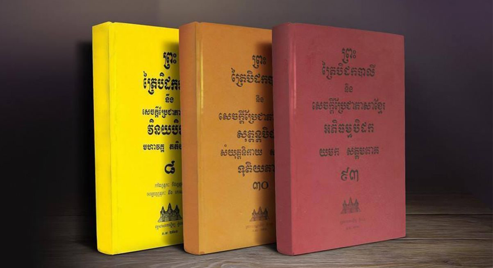

សំណួរ និង ចម្លើយផ្នែកព្រះរតនត្រ័យ
ស្វែងយល់ពីអត្ថន័យ និងគុណរបស់ព្រះពុទ្ធ ព្រះធម៌ និងព្រះសង្ឃ
រតនៈទាំងបី
ព្រះពុទ្ធ (The Buddha)
ព្រះអង្គជាអគ្គគ្រូ ដ៏ប្រសើរក្នុងលោក ដែលបានត្រាស់ដឹងនូវសច្ចធម៌ដោយព្រះអង្គឯង។
ព្រះធម៌ (The Dhamma)
ជាសច្ចធម៌ ឬជាពាក្យបណ្ដាំរបស់ព្រះអង្គ ដែលនាំសត្វលោកឲ្យរួចចាកផុតទុក្ខ។
ព្រះសង្ឃ (The Sangha)
ជាសហគមន៍នៃអរិយបុគ្គល ដែលបដិបត្តិតាមព្រះធម៌ និងជួយផ្សព្វផ្សាយបន្ត។
ព្រះរតនត្រ័យ (Tiratna) មានន័យថា "រតនៈដ៏ប្រសើរទាំងបី"
ដែលជាទីពឹងទីរឭកខ្ពស់បំផុតក្នុងព្រះពុទ្ធសាសនា។ រតនៈទាំងបីនោះរួមមាន៖
១. ព្រះពុទ្ធ (Buddha)
ព្រះអង្គជាអគ្គគ្រូ ដែលបានត្រាស់ដឹងនូវសច្ចធម៌ដោយព្រះអង្គឯង
និងបានបង្ហាញផ្លូវដល់សត្វលោក។
២. ព្រះធម៌ (Dhamma)
គឺជាសច្ចធម៌ ឬជាពាក្យបង្រៀនរបស់ព្រះពុទ្ធ ដែលនាំឲ្យអ្នកបដិបត្តិរួចចាកផុតពីទុក្ខ។
៣. ព្រះសង្ឃ (Sangha)
គឺជាសហគមន៍នៃអរិយសាវ័ក (អ្នកបានសម្រេចធម៌) ដែលបដិបត្តិតាមព្រះធម៌
និងជួយផ្សព្វផ្សាយបន្ត។
ព្រះពុទ្ធ (Buddha) មានន័យថា "អ្នកត្រាស់ដឹង"។ ក្នុងន័យទូទៅ គឺសំដៅលើ ព្រះសម្មាសម្ពុទ្ធ
ព្រះនាម សิท្ធត្ថ គោតម ដែលបានត្រាស់ដឹងនូវ "អរិយសច្ច ៤" ដោយព្រះអង្គឯង គ្មានគ្រូបង្រៀន។
គុណរបស់ព្រះពុទ្ធ៖
ព្រះអង្គប្រកបដោយគុណធំៗ ៣ យ៉ាងគឺ៖
- ព្រះបញ្ញាគុណ៖ ការត្រាស់ដឹង យល់ច្បាស់នូវលោកទាំងមូល។
- ព្រះវិសុទ្ធិគុណ៖ ភាពបរិសុទ្ធ គ្មានកិលេស សៅហ្មង។
- ព្រះមហាករុណាគុណ៖ សេចក្ដីមេត្តាករុណាដ៏ធំធេងចំពោះសព្វសត្វ។
ព្រះធម៌ (Dhamma) គឺជាសច្ចធម៌ពិត ដែលព្រះពុទ្ធបានត្រាស់ដឹង និងបានបង្រៀន។ វាក៏ជា
"ច្បាប់ធម្មជាតិ" ដែលគ្រប់គ្រងអ្វីៗទាំងអស់ (ដូចជា អនិច្ចំ ទុក្ខំ អនត្តា)។ ព្រះធម៌ គឺជា
"ផែនទី" សម្រាប់ដើរឆ្ពោះទៅរកការរំលត់ទុក្ខ។
គុណរបស់ព្រះធម៌៖
ព្រះធម៌មានគុណ ៦ យ៉ាង (ស្វាក្ខាតោ...):
- ស្វាក្ខាតោ៖ ជាធម៌ដែលព្រះអង្គត្រាស់ទុកល្អហើយ។
- សန္ទិដ្ឋិកោ៖ ជាធម៌ដែលអ្នកបដិបត្តិអាចឃើញច្បាស់ដោយខ្លួនឯង។
- អកាលិកោ៖ ជាធម៌ដែលឲ្យផលមិនរង់ចាំកាល (អនុវត្តភ្លាម បានផលភ្លាម)។
ព្រះសង្ឃ (Sangha) មានន័យពីរយ៉ាង៖
- សម្មតិសង្ឃ (Conventional Sangha): គឺក្រុមព្រះភិក្ខុដែលបានបួស គ្រងសំពត់កាសាវពស្ត្រ (សំពត់លឿង) ដែលយើងឃើញសព្វថ្ងៃ។
- អរិយសង្ឃ (Noble Sangha): គឺជាសាវ័ករបស់ព្រះពុទ្ធ (មិនថាជាព្រះសង្ឃ ឬគ្រហស្ថ) ដែលបានបដិបត្តិ និងសម្រេចមគ្គផល (ដូចជា សោតាបន្ន, សកទាហ្គាមី ជាដើម)។
គុណរបស់ព្រះសង្ឃ៖
ក្នុង "ព្រះរតនត្រ័យ" គឺយើងសំដៅលើ "អរិយសង្ឃ"។ ព្រះអង្គជា "បុញ្ញក្ខេត្តំ" គឺ
"ជាស្រែបុណ្យដ៏ប្រសើរនៃលោក" សម្រាប់ឲ្យយើងសាបព្រោះអំពើល្អ។
"ត្រៃសរណគមន៍" (Taking the Three Refuges) គឺជាការប្រកាសទទួលស្គាល់ និងយក ព្រះពុទ្ធ ព្រះធម៌
ព្រះសង្ឃ ជាទីពឹង ទីរឭកដ៏ខ្ពស់បំផុត។ នេះគឺជាជំហានដំបូង ដែលបញ្ជាក់ថាខ្លួនជា "ពុទ្ធសាសនិក"
(Buddhist)។
វាក្យសម្ពន្ធសរណគមន៍៖
- ពុទ្ធំ សរណំ គច្ឆាមិ (ខ្ញុំសូមដល់នូវព្រះពុទ្ធជាទីពឹង)
- ធម្មំ សរណំ គច្ឆាមិ (ខ្ញុំសូមដល់នូវព្រះធម៌ជាទីពឹង)
- សង្ឃំ សរណំ គច្ឆាមិ (ខ្ញុំសូមដល់នូវព្រះសង្ឃជាទីពឹង)
យើងអាចគោរពព្រះរតនត្រ័យតាមរយៈ "ការបដិបត្តិបូជា" ដែលជាការគោរពដ៏ខ្ពស់បំផុត៖
១. គោរពព្រះពុទ្ធ
គឺដោយការបដិបត្តិតាមពាក្យបង្រៀនរបស់ទ្រង់ (ដើរតាមអរិយមគ្គ)។
២. គោរពព្រះធម៌
គឺដោយការយកព្រះធម៌នោះមកអនុវត្តក្នុងជីវិត (ដូចជា រក្សាសីល, ធ្វើសមាធិ)។
៣. គោរពព្រះសង្ឃ
គឺដោយការធ្វើអំពើល្អ ដើរតាមគន្លងរបស់អរិយសង្ឃ និង ជួយឧបត្ថម្ភដល់សម្មតិសង្ឃ។
ប្រយោជន៍នៃការยึดมั่น (ยึดมั่น) ក្នុងព្រះរតនត្រ័យ៖
- មានទីពឹងដ៏ត្រឹមត្រូវ៖ ជួយឲ្យចិត្តមានសន្តិភាព មិនវង្វេង ឬភ័យខ្លាច ព្រោះមានទីពឹងដែលប្រកបដោយបញ្ញា និងករុណា។
- ជាគ្រឹះនៃអំពើល្អ៖ ការមានសរណគមន៍ ជាមូលដ្ឋានគ្រឹះក្នុងការរក្សាសីល ធ្វើសមាធិ និងចម្រើនបញ្ញា។
- ទិសដៅច្បាស់លាស់៖ ធ្វើឲ្យយើងមានទិសដៅក្នុងជីវិត គឺការដើរតាមផ្លូវដើម្បីការរំលត់ទុក្ខ។
បាទ/ចាស មាន។ តាមគម្ពីរព្រះពុទ្ធសាសនា ព្រះពុទ្ធដែលនឹងត្រាស់ដឹងនាពេលអនាគត គឺព្រះ
ស្រីអារ្យមេត្រី (Maitreya Buddha)។ ព្រះអង្គនឹងមកត្រាស់ដឹង បន្ទាប់ពីសាសនារបស់ព្រះសមណគោតម
(Shakyamuni Buddha) បានសាបសូន្យទៅ។
ព្រះពុទ្ធអង្គបច្ចុប្បន្នរបស់យើង (ព្រះសមណគោតម) គឺជាព្រះពុទ្ធទី ៤ ក្នុង "ភទ្ទកប្ប"
នេះ។ ព្រះស្រីអារ្យមេត្រី នឹងជាព្រះពុទ្ធទី ៥ និងអង្គចុងក្រោយនៃកប្បនេះ។
ព្រះរតនត្រ័យ និង សីល មានទំនាក់ទំនងគ្នាយ៉ាងជិតស្និទ្ធ៖
- ត្រៃសរណគមន៍ (Refuge) គឺជាការតាំងចិត្ត (ការប្ដេជ្ញា) ថានឹងដើរតាមផ្លូវរបស់ព្រះ។
- សីល (Sila) គឺជាការអនុវត្តជាក់ស្ដែង ជំហានដំបូង បន្ទាប់ពីបានតាំងចិត្តនោះ (គឺការវៀរចាកអំពើអាក្រក់)។
នៅពេលពុទ្ធបរិស័ទសុំសីល (ដូចជា សីល ៥) ពួកគេតែងតែសូត្រ "ត្រៃសរណគមន៍" ជាមុនសិន។
នេះបង្ហាញថា ការមានទីពឹងដ៏ត្រឹមត្រូវ គឺជាមូលដ្ឋានគ្រឹះ មុននឹងចាប់ផ្ដើមរក្សាសីល។
បាទ/ចាស គួរណាស់។ ការរឭកដល់ព្រះរតនត្រ័យរាល់ថ្ងៃ (ដូចជាពេលសូត្រមន្ត ព្រឹក-ល្ងាច)
ជួយពង្រឹងសទ្ធា (ជំនឿដែលត្រឹមត្រូវ) និង សតិ (ការដឹងខ្លួន) របស់យើង។
ការរឭកដល់គុណព្រះរតនត្រ័យ ជួយឲ្យចិត្តយើងជ្រះថ្លា ស្ងប់រម្ងាប់ពីកង្វល់
និងជាការរំឭកខ្លួនឯងឲ្យប្រព្រឹត្តតែអំពើល្អ ស្របតាមពាក្យបង្រៀនរបស់ព្រះអង្គ។
ត្រៀមខ្លួនក្នុងការគោរពឬនៅ?
ការគោរពព្រះរតនត្រ័យ គឺជាការចាប់ផ្ដើមនៃសេចក្ដីជ្រះថ្លា។ សូមតាំងចិត្តសមាទាន "សរណគមន៍" ថ្ងៃនេះ។
ស្វែងយល់ពី "ត្រៃសរណគមន៍"